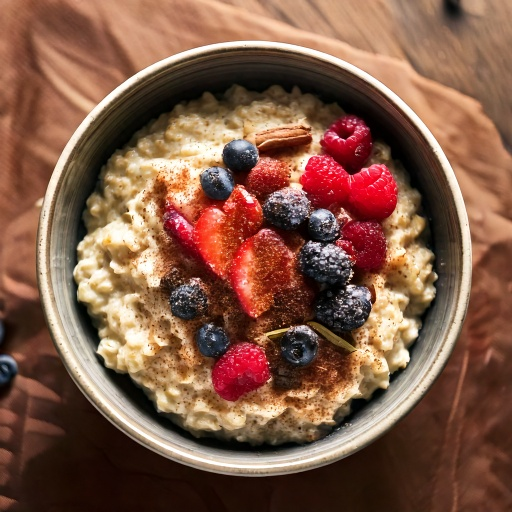

Nutty steel-cut oats topped with fresh berries and warming cinnamon.
Nutrition (per serving)
435
Calories
70g
Carbs
14g
Protein
12g
Fat
15g
Fiber
~42
Est. GI
Why this fits a diabetes-friendly diet
At 70g of carbs per serving, it's worth pairing with protein or fat and watching portion size to keep the resulting blood sugar rise gradual, and its estimated glycemic index of ~42 means the carbs it does have tend to digest slowly rather than spiking blood sugar fast, and 15g of fiber per serving adds the same slowing effect.
Ingredients
- 1/2 cup steel-cut oats
- 1/2 cup mixed berries
- 1/2 tsp cinnamon
- 1 tbsp chia seeds
- 1 cup unsweetened almond milk
- 1/2 tsp vanilla extract
Instructions
- Bring almond milk and 1 cup water to a boil in a saucepan.
- Stir in oats, reduce heat, and simmer 20–25 minutes.
- Stir in cinnamon and vanilla extract.
- Top with berries and chia seeds before serving.
In GlucoBeacon
This recipe is one of 150+ in the GlucoBeacon Recipe Library, each with full nutrition breakdown, glycemic index estimate, and one-tap logging straight to your blood sugar history. Get notified when GlucoBeacon launches →